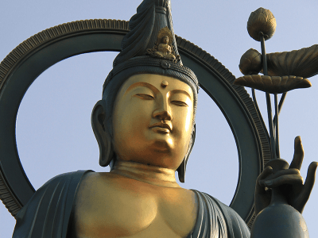
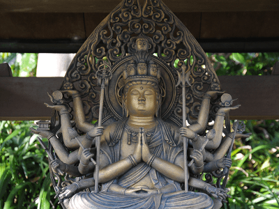

通夜式、告別式での読経を差し上げ、戒名授与までを承っています。提携の葬祭会社との連携でお葬式全般を取り仕切りますので安心してご用命ください。観音御光之会ではお通夜、告別式から初七日までを葬祭と捉え、故人の旅たちをお手伝いしています。
法要とは、遺族が故人を偲び冥福を祈るために行う「追善供養」のことを指します。 法要は一般に「法事」と呼ばれていますが、厳密にはお経をあげてもらう追善供養を「法要」と呼び、追善供養の後席の会食まで含むものを「法事」と呼びます。 法要は、遺族が故人の冥福（冥土の幸福）を祈るために行うものです。法要を営むことによって故人は極楽浄土に往生できるとされているので、故人を供養するためには必ず必要な儀式です。ただし、浄土真宗ではご臨終と同時に極楽往生すると考えるので、中陰の法要の意味は故人を偲び、仏法に接するためのものと考えます。
お葬式の永代供養は、お寺がご遺族の代わりに故人様のご遺骨を管理し、永年に渡りご供養いたします。 納骨先の寺院にてご遺骨をお預かりした後、共同墓に2年間個別安置し、お盆やお彼岸など年1回合同でお経を唱える供養をいたします。
平成18年9月世の乱れを嘆き、日本の繁栄を願い行雄観導師によって東京都中央区に設立。布教を開始。平成22年7月香川県坂出市に礼拝所道場を開設。 平成28年9月15日文部科学大臣より認証。宗教法人となる。